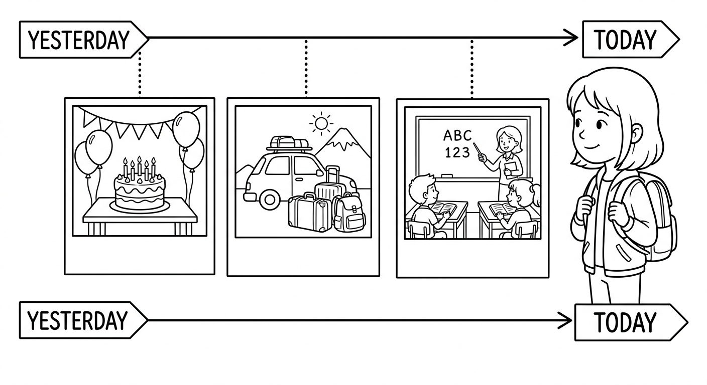
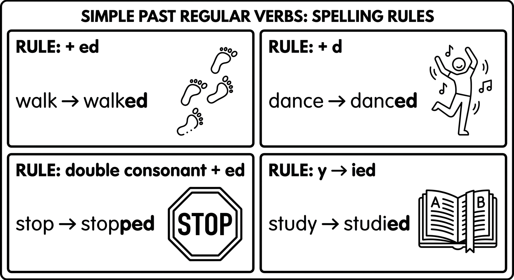
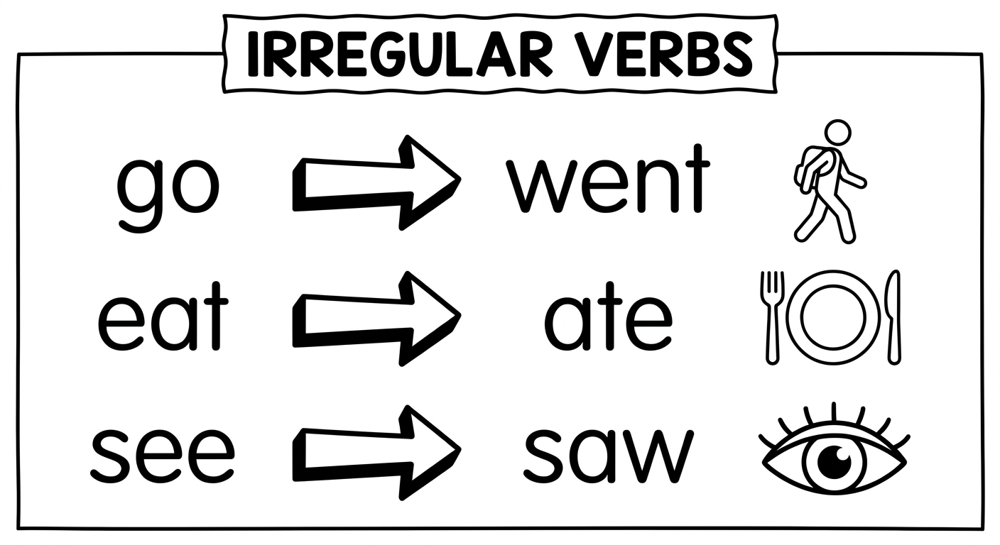
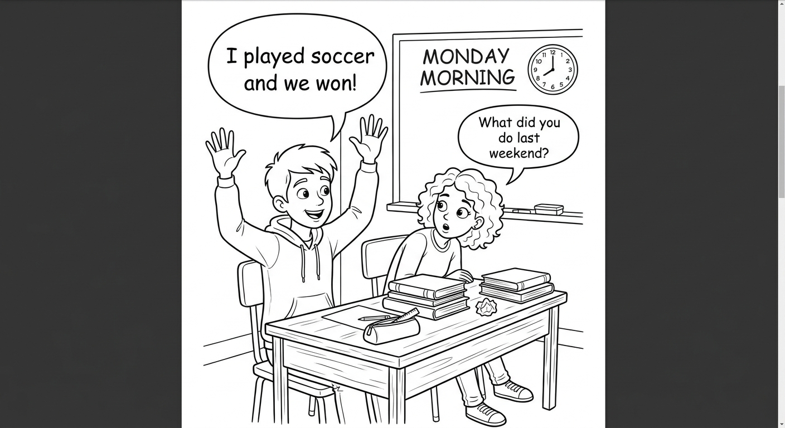
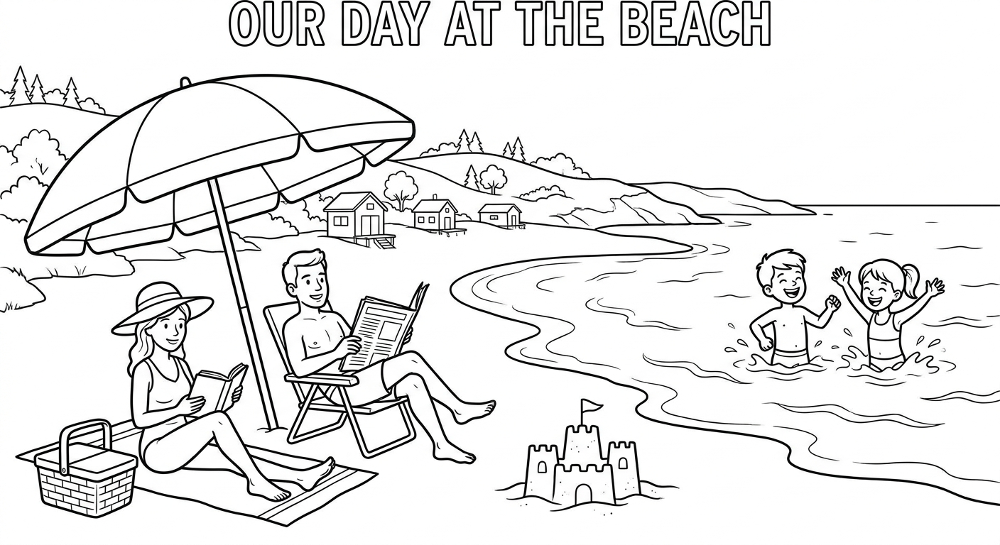

Simple Past (Introduction)
Learn to talk about things that happened in the past. Use the Simple Past to describe completed actions, tell stories, and talk about your experiences.

Simple Past - Regular Verbs
We use the Simple Past to talk about actions that started and finished in the past. For regular verbs, add -ed to the base form.
| Form | Structure | Example |
|---|---|---|
| Affirmative | Subject + verb-ed | She worked yesterday. |
| Negative | Subject + didn't + base verb | She didn't work yesterday. |
| Interrogative | Did + subject + base verb? | Did she work yesterday? |
Important: The past form is the same for all subjects (I, you, he, she, it, we, they). There is no -s for he/she/it in the past!
| Rule | When | Examples |
|---|---|---|
| Add -ed | Most verbs | work → worked, play → played, clean → cleaned |
| Add -d | Verbs ending in -e | live → lived, dance → danced, like → liked |
| Double the last consonant + -ed | Short verbs ending in consonant-vowel-consonant (CVC) | stop → stopped, plan → planned, drop → dropped |
| Change -y to -ied | Verbs ending in consonant + y | study → studied, try → tried, carry → carried |
Note: If the verb ends in a vowel + y, just add -ed: play → played, enjoy → enjoyed.
| Base Form | Past Form | Portugues |
|---|---|---|
| work | worked | trabalhar |
| play | played | jogar / brincar |
| study | studied | estudar |
| stop | stopped | parar |
| watch | watched | assistir |
| listen | listened | ouvir / escutar |
| cook | cooked | cozinhar |
| clean | cleaned | limpar |
| dance | danced | dancar |
| live | lived | morar / viver |
| travel | traveled | viajar |
| arrive | arrived | chegar |
| try | tried | tentar |
| call | called | ligar / chamar |
| help | helped | ajudar |
| want | wanted | querer |
| need | needed | precisar |

Examples in Context
Fernanda studied for the test last night.
Fernanda estudou para a prova ontem a noite.
We played soccer in the park yesterday.
Nos jogamos futebol no parque ontem.
Marcos cooked dinner for his family last Sunday.
Marcos cozinhou o jantar para a familia dele no domingo passado.
I didn't watch TV yesterday.
Eu nao assisti TV ontem.
Did you call your mother?
Voce ligou para a sua mae?
Yes, I did. / No, I didn't.
Sim, liguei. / Nao, nao liguei.
The -ed ending has three different pronunciations:
- /t/ — after voiceless sounds (p, k, f, s, sh, ch): worked, watched, stopped, helped
- /d/ — after voiced sounds (b, g, v, z, l, m, n, r) and vowels: played, cleaned, called, listened
- /ɪd/ — after -t or -d sounds: wanted, needed, visited, started
Only the /ɪd/ sound adds an extra syllable. For example: "worked" = 1 syllable, but "wanted" = 2 syllables.
Suggested time: 25 minutes
Pronunciation focus: Practice the three -ed sounds with students. Write verbs on the board and have students sort them into three columns: /t/, /d/, /ɪd/. Clap the syllables to show that only /ɪd/ adds a syllable.
Common error for Brazilian students: Students often pronounce -ed as a separate syllable in all cases (e.g., "work-ED" instead of "workt"). Remind them that most of the time, -ed does NOT add an extra syllable.
Activity: Have students tell their partner three things they did yesterday using regular verbs from the vocabulary table.
Write the Simple Past form of each regular verb. Pay attention to the spelling rules!
Select the correct Simple Past form for each sentence.
They _______ soccer after school yesterday. (play)
b) playedHelena _______ math for two hours last night. (study)
c) studiedThe bus _______ at the corner five minutes ago. (stop)
b) stoppedCarla _______ to a new song at the party. (dance)
c) dancedGustavo _______ to fix the computer, but it didn't work. (try)
a) triedSimple Past - Irregular Verbs
Many of the most common English verbs are irregular. They do NOT follow the -ed pattern. Each verb has its own special past form that must be memorized.
- go → went (NOT "goed")
- eat → ate (NOT "eated")
- have → had (NOT "haved")
- see → saw (NOT "seed")
There is no rule for irregular verbs — you need to study and memorize them! Start with the most common ones in the table below.
| Base Form | Past Form | Portugues |
|---|---|---|
| go | went | ir |
| eat | ate | comer |
| have | had | ter |
| see | saw | ver |
| come | came | vir |
| make | made | fazer / preparar |
| take | took | pegar / levar |
| get | got | conseguir / receber |
| buy | bought | comprar |
| write | wrote | escrever |
| read | read | ler (a forma e igual, mas a pronuncia muda!) |
| speak | spoke | falar |
| sleep | slept | dormir |
| drink | drank | beber |
| think | thought | pensar / achar |
| know | knew | saber / conhecer |
| give | gave | dar |
| find | found | encontrar / achar |
| tell | told | contar / dizer |
| feel | felt | sentir |

Examples with Irregular Verbs
Rafael went to the mall last Saturday.
Rafael foi ao shopping no sabado passado.
We ate pizza at Leticia's birthday party.
Nos comemos pizza na festa de aniversario da Leticia.
My grandmother made a delicious cake.
Minha avo fez um bolo delicioso.
They bought new shoes for school.
Eles compraram sapatos novos para a escola.
I didn't go to the beach last weekend.
Eu nao fui a praia no fim de semana passado.
Did you see the new movie?
Voce viu o filme novo?
In negative sentences and questions, use did/didn't + BASE VERB (not the past form!).
- CORRECT: She didn't go to school. / Did she go to school?
- WRONG: She didn't
wentto school. / Did shewentto school?
The word "did" already carries the past meaning, so the main verb stays in the base form!
Dialogue: What Did You Do Last Weekend?

Suggested time: 30 minutes
Key concept: Irregular verbs are the biggest challenge for students at this level. Focus on the 20 most common verbs in the table. Use flashcards or a memory game to help students memorize them.
Dialogue activity: Read the dialogue aloud with the class. Then have students practice in pairs. Finally, ask pairs to create their own version, replacing the activities with what they actually did last weekend.
Common error: Brazilian students often say "Did you went?" or "I didn't went." Emphasize that "did" already contains the past meaning, so the main verb must be in the base form.
Fill in the blank with the correct Simple Past form of the irregular verb in parentheses.
Match each verb in the base form (left) with its correct past form (right). Write the letter in the box.
Negative and Question Forms
To make a negative sentence in the Simple Past, use didn't (did not) + the base form of the verb.
| Subject | Didn't | Base Verb | Rest of Sentence |
|---|---|---|---|
| I | didn't | go | to school. |
| You | didn't | eat | breakfast. |
| He / She | didn't | study | for the test. |
| We / They | didn't | play | soccer yesterday. |
Important: Use "didn't" for ALL subjects. The main verb is always in the base form (NOT past form).
To make a question in the Simple Past, use Did + subject + base verb.
| Did | Subject | Base Verb | Rest of Sentence |
|---|---|---|---|
| Did | you | go | to school? |
| Did | he | eat | lunch? |
| Did | they | play | soccer? |
Short answers:
- Yes, I/you/he/she/we/they did.
- No, I/you/he/she/we/they didn't.
These time expressions are commonly used with the Simple Past:
| English | Portugues | Example |
|---|---|---|
| yesterday | ontem | I played soccer yesterday. |
| last week | semana passada | She traveled last week. |
| last month | mes passado | We visited our grandparents last month. |
| last year | ano passado | They moved to Brasilia last year. |
| last night | ontem a noite | He studied math last night. |
| ... ago | ... atras | I started this school two years ago. |
| in 2020 | em 2020 | We lived in Sao Paulo in 2020. |
| this morning | esta manha | I woke up early this morning. |
Examples: Negative and Question Forms
Pedro didn't study for the English test.
Pedro nao estudou para a prova de ingles.
We didn't eat lunch at school yesterday.
Nos nao almocamos na escola ontem.
Did Camila go to the party last night?
Camila foi a festa ontem a noite?
Yes, she did. / No, she didn't.
Sim, foi. / Nao, nao foi.
What did you do last weekend?
O que voce fez no fim de semana passado?
Where did they go on vacation?
Onde eles foram nas ferias?
Suggested time: 20 minutes
Focus: The main challenge here is remembering to use the base form (not the past form) after "did/didn't." Drill this pattern repeatedly: "Did you GO?" not "Did you WENT?"
Activity: Play a "Did you...?" interview game. Give each student a card with a question (e.g., "Did you eat pizza last week?"). Students walk around the room asking classmates and recording Yes/No answers. Then they report: "Three students ate pizza last week."
Brazilian Portuguese comparison: In Portuguese, negatives are simpler ("nao + past verb"). Help students see that English needs the auxiliary "did" to form negatives and questions, which is different from Portuguese structure.
Rewrite each sentence in the negative form using didn't.
Example: She played tennis. → She didn't play tennis.
Roberto watched TV last night.
Roberto didn't watch TV last night.They went to the beach on Sunday.
They didn't go to the beach on Sunday.Mariana ate breakfast this morning.
Mariana didn't eat breakfast this morning.I studied English yesterday.
I didn't study English yesterday.He bought a new phone last week.
He didn't buy a new phone last week.We slept well last night.
We didn't sleep well last night.Rewrite each sentence as a Yes/No question using Did.
Example: She played tennis. → Did she play tennis?
Tiago cooked dinner last night.
Did Tiago cook dinner last night?She saw the new movie.
Did she see the new movie?They traveled to Salvador last summer.
Did they travel to Salvador last summer?You spoke English with the tourist.
Did you speak English with the tourist?The students finished the homework.
Did the students finish the homework?Carolina gave a present to her friend.
Did Carolina give a present to her friend?Reading & Writing
Last summer, Beatriz and her family traveled to Florianopolis for their vacation. They left Curitiba early in the morning and drove for about six hours. Beatriz was very excited because she loved the beach.
On the first day, they went to Praia da Joaquina. Beatriz and her brother Felipe swam in the ocean and played in the sand. Their parents sat under an umbrella and read books. In the afternoon, the family ate lunch at a small restaurant near the beach. Beatriz tried a fish dish called "peixe na telha" and she loved it!
On Tuesday, the family visited the Lagoa da Conceicao. They didn't swim there because the water was cold, but they walked around the lake and took many photos. Felipe bought a small surfboard keychain at a souvenir shop. Beatriz didn't buy anything because she forgot her money at the hotel.
On the last day, they went to the historic center of Florianopolis. They saw the old market and Beatriz's mother bought fresh fruit. Beatriz's father talked to a fisherman and learned about the history of the city. Beatriz felt sad because the vacation was ending, but she was happy because she had amazing memories.
When they got home, Beatriz told all her friends about the trip. She showed them the photos on her phone and said: "I want to go back next year!" Her friends thought the trip sounded wonderful. They all wanted to visit Florianopolis too.

Pre-reading activity: Ask students: "Where did you go on your last vacation? What did you do there?" Have 2-3 students share briefly. This activates prior knowledge and the Simple Past before reading.
Reading strategy: Have students read the text once for general understanding. Then read again and underline all verbs in the Simple Past. Ask: "How many regular verbs can you find? How many irregular verbs?"
Vocabulary support: Pre-teach: drove (drive), umbrella (guarda-sol/sombrinha), sand (areia), souvenir (lembranca), memories (memorias).
Read each sentence. Write T (True) or F (False) based on the text.
Answer the questions in complete sentences based on the text. Use the Simple Past.
What did Beatriz and Felipe do at Praia da Joaquina?
They swam in the ocean and played in the sand.Why didn't Beatriz buy anything at the souvenir shop?
She didn't buy anything because she forgot her money at the hotel.What did the family do on the last day of the vacation?
They went to the historic center of Florianopolis. They saw the old market, Beatriz's mother bought fresh fruit, and her father talked to a fisherman.How did Beatriz feel at the end of the vacation? Why?
She felt sad because the vacation was ending, but she was happy because she had amazing memories.Write a short paragraph (6-8 sentences) about what you did last weekend. Use the Simple Past tense. Try to use both regular and irregular verbs. You can use the sentence starters below to help you.
- Last weekend, I...
- On Saturday morning, I...
- In the afternoon, I...
- On Sunday, I...
- I didn't... because...
- My weekend was... because...
Useful verbs: went, played, watched, ate, studied, visited, cooked, cleaned, stayed, slept, talked, helped, saw, made, read
My Last Weekend
Suggested time: 25 minutes (10 minutes for reading exercises, 15 minutes for writing)
Assessment criteria for Exercise 9:
- Correct use of the Simple Past tense (both regular and irregular verbs)
- At least 6 sentences
- Use of at least 3 different time expressions (yesterday, last Saturday, in the morning, etc.)
- At least one negative sentence
- Clear and coherent paragraph structure
Extension activity: Have students swap their paragraphs with a partner. The partner reads and writes 2 questions about the text using "Did you...?" The original author answers the questions.
Differentiation: For students who finish early, ask them to write 3 True/False questions about their paragraph for a classmate to answer.
Chapter 6 - Answer Key
Exercise 1: Write the Past Form
Exercise 2: Choose the Correct Past Form
Exercise 3: Complete with the Irregular Past Form
Exercise 4: Match the Base Form to the Past Form
Exercise 5: Make It Negative
Exercise 6: Form Questions
Exercise 7: True or False
Exercise 8: Answer the Questions
Exercise 9: Write About Your Last Weekend
Answers will vary. Check for correct use of Simple Past (both regular and irregular verbs), at least 6 sentences, use of time expressions, at least one negative sentence, and coherent paragraph structure.